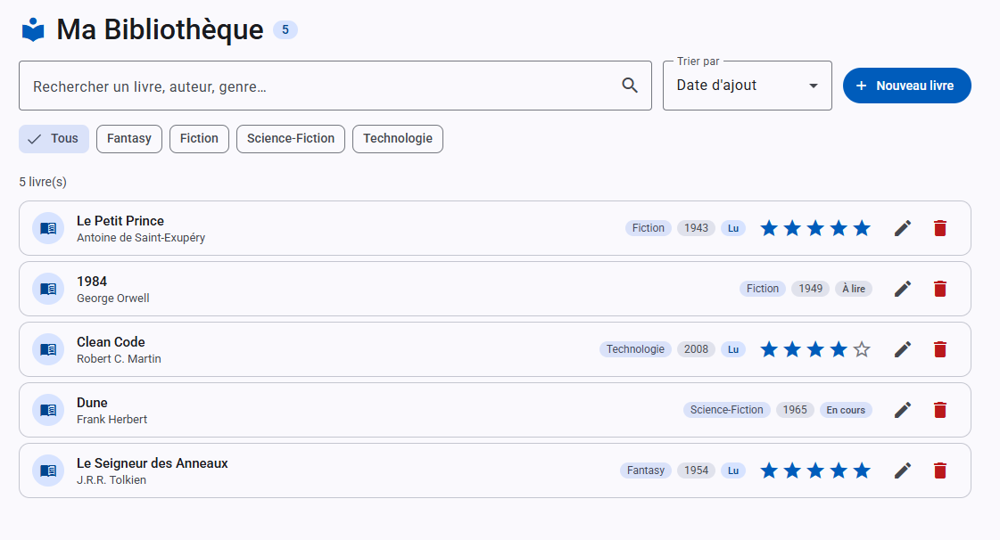
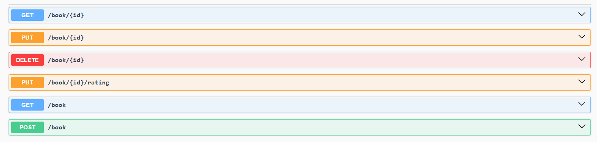

Bibliothèque - Front
Application de gestion de livres avec notation et filtres de recherche. Interface réalisée avec Angular 21 comprenant le changement de langue et des tests d'intégration.
Développeur Web Fullstack
Diplômé d'un DUT informatique et d'une licence professionnelle spécialité Web, je crée des applications web complètes. Autodidacte depuis mon adolescence, je suis passionné par le monde de l'informatique et j'ai décidé d'en faire mon métier.
Curieux de nature, j'aime comprendre ce qui m'entoure et c'est ce qui m'anime tous les jours dans le développement informatique.
Les technologies et outils que j'utilise au quotidien, ainsi que ceux que je suis en train d'approfondir.
Une sélection de projets réalisés pour apprendre, expérimenter et consolider mes compétences.

Application de gestion de livres avec notation et filtres de recherche. Interface réalisée avec Angular 21 comprenant le changement de langue et des tests d'intégration.

API REST de gestion d'une bibliothèque CRUD développée en Java 21 / Spring Boot avec Spring Data JPA et MySQL.